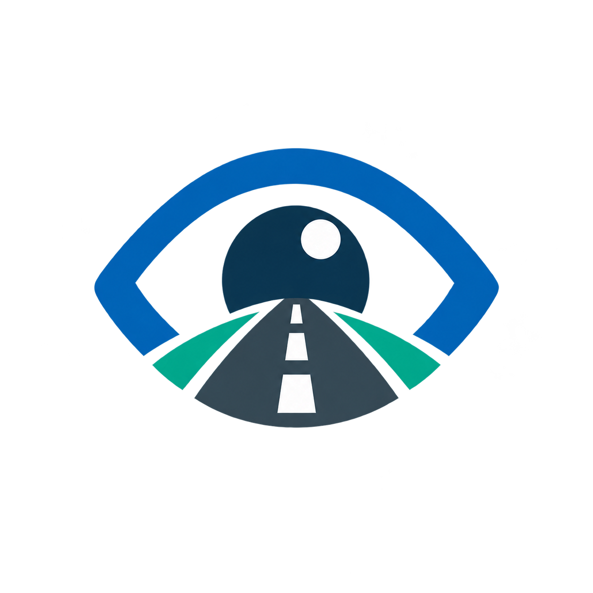

Marque no mapa
Use o GPS em tempo real ou toque no local da ocorrência.

OLHO NA VIAURBAN SIGNALExplorar app ↗MAPA COLABORATIVO / BRASIL
OLHO NA VIA
Um aplicativo para transformar problemas nas ruas em ocorrências visíveis, organizadas e acompanhadas.
GPS EM TEMPO REAL · FOTO · PROTOCOLO 311
SISTEMA DE DEMONSTRAÇÃO ATIVO
VIA / MAPA URBANO
ARRASTE O CELULAR PARA GIRARCIDADANIA EM MOVIMENTO
O Olho na Via aproxima população e gestão pública. Ao registrar uma situação, você cria um dado que pode orientar prioridades e tornar a manutenção urbana mais transparente.
DO MAPA À SOLUÇÃO
Três gestos transformam um ponto do mapa em uma ocorrência acompanhável.
Use o GPS em tempo real ou toque no local da ocorrência.
Envie foto e descrição para dar contexto ao registro.
Consulte o status e o histórico da solicitação.
TECNOLOGIA QUE CONECTA
Coordenadas para localizar o problema com precisão.
Imagem para apoiar a análise e a decisão.
Integração inspirada no padrão de serviços urbanos.
Protocolos, mudanças de status e fotos preservados.
05 / PROJETO ACADÊMICO
Aplicativo mobile desenvolvido em React Native e Expo, com mapa, câmera, localização, API compatível com o fluxo Open311 e banco SQLite.
Abrir repositório ↗